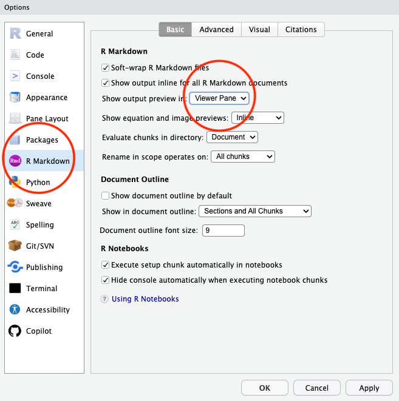
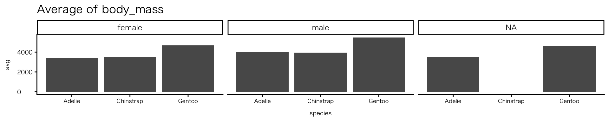
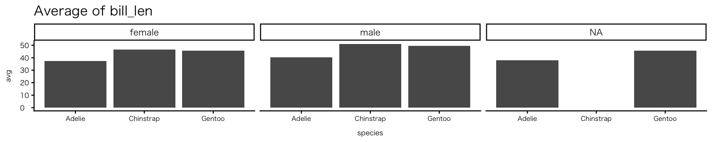
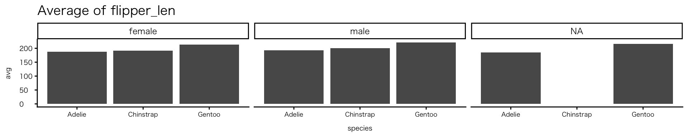
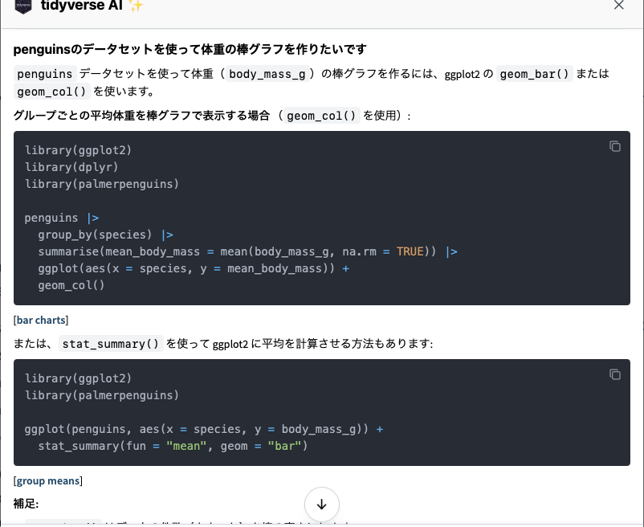

![]()
| species | island | bill_len | bill_dep | flipper_len | body_mass | sex | year |
|---|---|---|---|---|---|---|---|
| Adelie | Torgersen | 39.1 | 18.7 | 181 | 3750 | male | 2007 |
| Adelie | Torgersen | 39.5 | 17.4 | 186 | 3800 | female | 2007 |
| Adelie | Torgersen | 40.3 | 18.0 | 195 | 3250 | female | 2007 |
RとQuartoではじめるデータサイエンス
#2 Rの基本的な操作方法(1)
April 15, 2026
0. 本日の目標
本日の目標
- データフレームの基本的な構造（行・列・変数）を理解する
- データの型（数値・文字・ファクターなど）の違いをなんとなく理解する
- データの抽出・除外についての基本的な操作を行ってみる
- データを簡単に計算し、その結果を図にしてみる（詳しい説明、理解は次週以降）
- 生成AIの注意点を理解してRの補助ツールとして活用する
- base Rとmodern Rの関係をなんとなく理解する
Ⅰ. 前回の振り返り
授業の感想
今まではデータに対する図や表はエクセルで十分だと考えていたのですが、今回の授業でその良さを知り、特に元データをいじらないという点を聞いた際に、エクセルで元データをいじったせいで面倒臭いことになったことを思い出して、自分の中でとても納得がいったからです（寺西さん）
私はパソコンの操作に自信がなく、授業前まで計算関連の数学的な部分で授業についていけなくなるのではないかと不安を感じていた（宮園さん）
どこを押せば先生と同じページになるのかが分からなくて手こずってしまった（吉田さん）
プログラムを使うのが日本語だけで不安だったが英語でこの言語についてリソース多いのが知りました（Dulmaa Mandalさん）。
前回の補足：Viewrが自動展開しない
- Renderしても右下のViewrが自動展開しない場合
- R Studioの設定
- Tools > Global Options > R Markdown
- 「Show output preview in」で「Viewer Pane」を選択
- デフォルト：「Window」（外部表示＝ブラウザで確認できる）
- どちらを選択しても構いません
- Tools > Global Options > R Markdown
- ファイルの保存先
- PC自体でなくクラウドに保存している（OneDriveなど）
- ➡︎ 保存先をcドライブ（PC内）に変更する
- YAML: format: html（確認。HTML以外（pptxやdocx）はViewerに出ない）
前回の補足：Viewrが自動展開しない

前回の補足：Kanazawa.R #5
- 第5回“R”統計解析勉強会@金沢
- 2026年5月30日(土)：14:00-17:30
- 民間のRユーザー中心（例）
- 共通テーマを設定して発表（過去：防災；観光）
- 無料（懇親会は有料）
- オンライン参加も可能
- 資料の多くは後日公開される
初回アンケート集計結果 / 前回の積み残し
前回の積み残し
- Rにふれてみよう：palmer penguins
- 前回作成したRprojファイルを開く（直接qmdファイルを開かない）
- 確認してほしいこと：
- Setup Chunkの有無
- Setup Chunk内に
library(tidyverse)というコードの有無
- Rを使ってデータ分析を深める
- 過年度のレポート紹介（実演のみ）
Ⅱ. データフレームの構造と型
データフレームとは何か
- データフレーム = データを表の形でまとめたもの
Excelのシートとの相違点
- 明確な列名とそれに従った値
- 空白行は入れない
- 空白セルは基本的に作らない
- 空白セルは欠損値
- セルの結合はしない
Excelでやりがちなこと
- 見やすくするための空白行挿入
- セルを結合する
- 見出しを2段にする
- 例：大問と小問。大問は行結合
- データ分析ではすべてNG
データフレームとは何か
複数行見出し
| V1 | V2 | V3 | V4 |
|---|---|---|---|
| 野菜 | 野菜 | 野菜 | 野菜 |
| 春野菜 | 春野菜 | 夏野菜 | 夏野菜 |
| ニンジン | キャベツ | トマト | キュウリ |
| 100 | 150 | 200 | 180 |
| 120 | 130 | 210 | 170 |
1行見出し
| 大カテゴリ | 中カテゴリ | 野菜名 | 1月売上 | 2月売上 |
|---|---|---|---|---|
| 野菜 | 春野菜 | ニンジン | 100 | 120 |
| 野菜 | 春野菜 | キャベツ | 150 | 130 |
| 野菜 | 夏野菜 | トマト | 200 | 210 |
| 野菜 | 夏野菜 | キュウリ | 180 | 170 |
- Rは列名でデータを操作する（列名を取得するcolnames()関数が重要な理由）ため、わかりやすく一意な名前を付けることが重要です。同じ列名がある場合、Rは読み込み時に自動で名前を変更します（元の列名が「野菜」の場合、「野菜.1」「野菜.2」になるなど）。また、「1月売上」は「月」と「売上」という2つの情報が1つの変数に混ざっているため、Rで操作しづらいです（詳しくは中盤回で説明します）
データフレームとは何か
- tidyな（整然とした）データなんて当たり前、ではない
messyな（雑然とした）データ
データフレームとは何か
- 無理やり読み込んでみる・・・
| ...1 | ...2 | ...3 | ...4 | ...5 | ...6 | ...7 | ...8 | ...9 | ...10 | ...11 | 第 ３ 表 主 要 家 計 指 標 | ...13 | ...14 | ...15 | ...16 | ...17 | ...18 | ...19 | ...20 | ...21 |
|---|---|---|---|---|---|---|---|---|---|---|---|---|---|---|---|---|---|---|---|---|
| NA | NA | NA | NA | NA | NA | NA | NA | NA | NA | NA | NA | NA | NA | NA | NA | NA | NA | NA | NA | NA |
| NA | NA | NA | NA | NA | NA | 総世帯 | NA | NA | NA | NA | NA | 二人以上の世帯 | NA | NA | NA | NA | NA | 単身世帯 | NA | 消費者 物価指数 |
| NA | NA | NA | NA | NA | NA | NA | NA | うち勤労者世帯 | NA | NA | NA | NA | NA | うち勤労者世帯 | NA | NA | NA | NA | NA | NA |
| NA | NA | NA | NA | NA | NA | NA | NA | NA | NA | NA | NA | NA | NA | NA | NA | NA | NA | NA | NA | NA |
| 年、年度、期 | NA | NA | NA | NA | NA | 世帯人員 | NA | 世帯人員 | NA | NA | NA | 世帯人員 | NA | 世帯人員 | NA | NA | NA | NA | NA | 持家の 帰属家賃 を除く 総合 |
| NA | NA | NA | NA | NA | NA | NA | NA | NA | NA | NA | NA | NA | NA | NA | NA | NA | NA | NA | NA | NA |
| NA | NA | NA | NA | NA | NA | NA | 消費支出 | NA | 実収入 | 可処分 | 消費支出 | NA | 消費支出 | NA | 実収入 | 可処分 | 消費支出 | 消費支出 | NA | NA |
| NA | NA | NA | NA | NA | NA | NA | NA | NA | NA | 所 得 | NA | NA | NA | NA | NA | 所 得 | NA | NA | NA | NA |
| NA | NA | NA | NA | NA | NA | (人) | NA | (人) | NA | NA | NA | (人) | NA | (人) | NA | NA | NA | NA | NA | NA |
| NA | NA | NA | NA | NA | NA | NA | NA | NA | NA | NA | NA | NA | NA | NA | NA | NA | NA | NA | NA | NA |
| NA | NA | NA | 2022年平均 | NA | NA | 2.2200000000000002 | 244231 | 2.5 | 535177 | 435001 | 273417 | 2.91 | 290865 | 3.24 | 617654 | 500914 | 320627 | 161753 | NA | 102.7 |
| NA | NA | NA | 2023 | NA | NA | 2.2000000000000002 | 247322 | 2.4700000000000002 | 522334 | 425967 | 272285 | 2.9 | 293997 | 3.23 | 608182 | 494668 | 318755 | 167620 | NA | 106.6 |
| NA | NA | NA | 2024 | NA | NA | 2.17 | 250929 | 2.4500000000000002 | 542886 | 446596 | 275568 | 2.88 | 300243 | 3.23 | 636155 | 522569 | 325137 | 169547 | NA | 110 |
| NA | NA | NA | 2025 | NA | NA | 2.15 | 259880 | 2.42 | 559173 | 454952 | 291397 | 2.87 | 314001 | 3.2 | 653901 | 532408 | 346297 | 173042 | NA | 114 |
| NA | NA | NA | 2021年度平均 | NA | NA | 2.2400000000000002 | 236573 | 2.52 | 522476 | 426796 | 266380 | 2.93 | 280935 | 3.27 | 608156 | 495783 | 311207 | 156339 | NA | 99.9 |
| NA | NA | NA | 2022 | NA | NA | 2.21 | 247219 | 2.5 | 538384 | 437146 | 275541 | 2.9 | 293671 | 3.24 | 620012 | 502262 | 322841 | 165796 | NA | 103.7 |
| NA | NA | NA | 2023 | NA | NA | 2.19 | 246676 | 2.46 | 522157 | 425532 | 271299 | 2.89 | 294116 | 3.23 | 609904 | 496111 | 319159 | 166318 | NA | 107.4 |
| 実 | NA | NA | 2024 | NA | NA | 2.17 | 254435 | 2.44 | 545752 | 449268 | 279487 | 2.88 | 304178 | 3.22 | 639372 | 524833 | 329598 | 172968 | NA | 111.2 |
| NA | NA | NA | 2021年 | 10～12 | 月期 | 2.2400000000000002 | 245931 | 2.5 | 609344 | 506562 | 272373 | 2.93 | 292077 | 3.27 | 711066 | 592057 | 320333 | 163007 | NA | 100 |
| NA | NA | NA | 2022年 | １～３ | NA | 2.23 | 234726 | 2.5 | 435798 | 360160 | 262372 | 2.92 | 284316 | 3.26 | 507882 | 419944 | 314444 | 146054 | NA | 100.8 |
| NA | NA | NA | NA | ４～６ | NA | 2.2200000000000002 | 240742 | 2.48 | 562844 | 446215 | 266472 | 2.91 | 289694 | 3.25 | 648729 | 510810 | 319865 | 153611 | NA | 102 |
| NA | NA | NA | NA | ７～９ | NA | 2.2200000000000002 | 237456 | 2.48 | 498561 | 404005 | 266951 | 2.91 | 285429 | 3.23 | 573555 | 463036 | 318001 | 152856 | NA | 103.2 |
| 数 | NA | NA | NA | 10～12 | NA | 2.21 | 255388 | 2.4900000000000002 | 651882 | 535924 | 282220 | 2.9 | 304022 | 3.24 | 740450 | 609865 | 330200 | 170672 | NA | 104.6 |
| NA | NA | NA | 2023年 | １～３ | NA | 2.2000000000000002 | 245524 | 2.48 | 446444 | 366503 | 271804 | 2.9 | 295539 | 3.24 | 517314 | 425338 | 323299 | 159241 | NA | 105.1 |
| NA | NA | NA | NA | ４～６ | NA | 2.2000000000000002 | 238444 | 2.4700000000000002 | 557127 | 443803 | 264985 | 2.9 | 288355 | 3.23 | 640984 | 507788 | 314821 | 153027 | NA | 106 |
| NA | NA | NA | NA | ７～９ | NA | 2.19 | 241159 | 2.44 | 478391 | 389607 | 264714 | 2.89 | 285955 | 3.22 | 556469 | 453700 | 309844 | 164807 | NA | 107 |
| (円) | NA | NA | NA | 10～12 | NA | 2.19 | 256267 | 2.42 | 619305 | 509645 | 275663 | 2.89 | 306138 | 3.23 | 717961 | 591845 | 327056 | 171961 | NA | 108.2 |
| NA | NA | NA | 2024年 | １～３ | NA | 2.1800000000000002 | 247610 | 2.44 | 448900 | 367555 | 273102 | 2.89 | 296016 | 3.24 | 524204 | 431111 | 324913 | 166773 | NA | 108.3 |
| NA | NA | NA | NA | ４～６ | NA | 2.17 | 243336 | 2.44 | 585981 | 477014 | 265894 | 2.88 | 294838 | 3.23 | 674715 | 547570 | 321269 | 158171 | NA | 109.4 |
| NA | NA | NA | NA | ７～９ | NA | 2.17 | 243416 | 2.4300000000000002 | 496157 | 409133 | 264339 | 2.88 | 292127 | 3.22 | 587586 | 484275 | 313249 | 163286 | NA | 110.4 |
| NA | NA | NA | NA | 10～12 | NA | 2.17 | 262019 | 2.4300000000000002 | 649532 | 538684 | 284317 | 2.88 | 317990 | 3.22 | 758114 | 627320 | 341116 | 170559 | NA | 111.9 |
| NA | NA | NA | 2025年 | １～３ | NA | 2.16 | 257021 | 2.41 | 455099 | 374376 | 282334 | 2.88 | 311755 | 3.2 | 537071 | 440165 | 342759 | 168292 | NA | 113 |
| NA | NA | NA | NA | ４～６ | NA | 2.16 | 254707 | 2.4300000000000002 | 598201 | 474613 | 286204 | 2.87 | 312407 | 3.21 | 696038 | 551040 | 345950 | 161715 | NA | 113.7 |
| NA | NA | NA | NA | ７～９ | NA | 2.15 | 252063 | 2.41 | 511575 | 415555 | 284173 | 2.87 | 307629 | 3.2 | 606932 | 493401 | 341996 | 163303 | NA | 114.1 |
| NA | NA | NA | NA | 10～12 | NA | 2.15 | 267160 | 2.37 | 662555 | 549623 | 294387 | 2.87 | 324212 | 3.18 | 775565 | 645027 | 354484 | 176516 | NA | 115.3 |
| NA | NA | NA | NA | NA | NA | NA | NA | NA | NA | NA | NA | NA | NA | NA | NA | NA | NA | NA | NA | NA |
| NA | NA | NA | 2022年平均 | NA | NA | - | 3.9 | - | 2.4 | 2.1 | 3.6 | - | 4.2 | - | 2 | 1.7 | 3.6 | 4.3 | NA | 3 |
| NA | NA | NA | 2023 | NA | NA | - | 1.3 | - | -2.4 | -2.1 | -0.4 | - | 1.1000000000000001 | - | -1.5 | -1.2 | -0.6 | 3.6 | NA | 3.8 |
| NA | NA | NA | 2024 | NA | NA | - | 1.5 | - | 3.9 | 4.8 | 1.2 | - | 2.1 | - | 4.5999999999999996 | 5.6 | 2 | 1.1000000000000001 | NA | 3.2 |
| NA | NA | NA | 2025 | NA | NA | - | 3.6 | - | 3 | 1.9 | 5.7 | - | 4.5999999999999996 | - | 2.8 | 1.9 | 6.5 | 2.1 | NA | 3.7 |
| NA | NA | NA | 2021年度平均 | NA | NA | - | 2.2000000000000002 | - | -1.5 | -1.3 | 2.7 | - | 1.7 | - | 0.1 | -0.2 | 2.2000000000000002 | 5.3 | NA | 0.1 |
| 対前年（度・同期） 名目増減率 | NA | NA | 2022 | NA | NA | - | 4.5 | - | 3 | 2.4 | 3.4 | - | 4.5 | - | 1.9 | 1.3 | 3.7 | 6 | NA | 3.8 |
| NA | NA | NA | 2023 | NA | NA | - | -0.2 | - | -3 | -2.7 | -1.5 | - | 0.2 | - | -1.6 | -1.2 | -1.1000000000000001 | 0.3 | NA | 3.5 |
| NA | NA | NA | 2024 | NA | NA | - | 3.1 | - | 4.5 | 5.6 | 3 | - | 3.4 | - | 4.8 | 5.8 | 3.3 | 4 | NA | 3.5 |
| NA | NA | NA | 2021年 | 10～12 | 月期 | - | 0.5 | - | 0.4 | 1.6 | 0.6 | - | -0.1 | - | 3.3 | 4.0999999999999996 | 1 | 4.5999999999999996 | NA | 0.6 |
| NA | NA | NA | 2022年 | １～３ | NA | - | 1.3 | - | 0.5 | 1.3 | 1.9 | - | 2.8 | - | 2.2999999999999998 | 3 | 2.2999999999999998 | -1.7 | NA | 1 |
| NA | NA | NA | NA | ４～６ | NA | - | 2.2000000000000002 | - | 0.8 | 0.4 | 1.2 | - | 3.2 | - | 0.5 | 0 | 2.4 | 0.9 | NA | 2.9 |
| NA | NA | NA | NA | ７～９ | NA | - | 5.9 | - | 1.8 | 1.9 | 6.8 | - | 7.1 | - | 0.9 | 0.6 | 6.9 | 3.8 | NA | 3.4 |
| NA | NA | NA | NA | 10～12 | NA | - | 3.8 | - | 7 | 5.8 | 3.6 | - | 4.0999999999999996 | - | 4.0999999999999996 | 3 | 3.1 | 4.7 | NA | 4.5999999999999996 |
| NA | NA | NA | 2023年 | １～３ | NA | - | 4.5999999999999996 | - | 2.4 | 1.8 | 3.6 | - | 3.9 | - | 1.9 | 1.3 | 2.8 | 9 | NA | 4.3 |
| NA | NA | NA | NA | ４～６ | NA | - | -1 | - | -1 | -0.5 | -0.6 | - | -0.5 | - | -1.2 | -0.6 | -1.6 | -0.4 | NA | 3.9 |
| NA | NA | NA | NA | ７～９ | NA | - | 1.6 | - | -4 | -3.6 | -0.8 | - | 0.2 | - | -3 | -2 | -2.6 | 7.8 | NA | 3.7 |
| NA | NA | NA | NA | 10～12 | NA | - | 0.3 | - | -5 | -4.9000000000000004 | -2.2999999999999998 | - | 0.7 | - | -3 | -3 | -1 | 0.8 | NA | 3.4 |
| NA | NA | NA | 2024年 | １～３ | NA | - | 0.8 | - | 0.6 | 0.3 | 0.5 | - | 0.2 | - | 1.3 | 1.4 | 0.5 | 4.7 | NA | 3 |
| NA | NA | NA | NA | ４～６ | NA | - | 2.1 | - | 5.2 | 7.5 | 0.3 | - | 2.2000000000000002 | - | 5.3 | 7.8 | 2 | 3.4 | NA | 3.1 |
| NA | NA | NA | NA | ７～９ | NA | - | 0.9 | - | 3.7 | 5 | -0.1 | - | 2.2000000000000002 | - | 5.6 | 6.7 | 1.1000000000000001 | -0.9 | NA | 3.2 |
| (％) | NA | NA | NA | 10～12 | NA | - | 2.2000000000000002 | - | 4.9000000000000004 | 5.7 | 3.1 | - | 3.9 | - | 5.6 | 6 | 4.3 | -0.8 | NA | 3.4 |
| NA | NA | NA | 2025年 | １～３ | NA | - | 3.8 | - | 1.4 | 1.9 | 3.4 | - | 5.3 | - | 2.5 | 2.1 | 5.5 | 0.9 | NA | 4.4000000000000004 |
| NA | NA | NA | NA | ４～６ | NA | - | 4.7 | - | 2.1 | -0.5 | 7.6 | - | 6 | - | 3.2 | 0.6 | 7.7 | 2.2000000000000002 | NA | 4 |
| NA | NA | NA | NA | ７～９ | NA | - | 3.6 | - | 3.1 | 1.6 | 7.5 | - | 5.3 | - | 3.3 | 1.9 | 9.1999999999999993 | 0 | NA | 3.4 |
| NA | NA | NA | NA | 10～12 | NA | - | 2 | - | 2 | 2 | 3.5 | - | 2 | - | 2.2999999999999998 | 2.8 | 3.9 | 3.5 | NA | 3 |
| NA | NA | NA | NA | NA | NA | NA | NA | NA | NA | NA | NA | NA | NA | NA | NA | NA | NA | NA | NA | NA |
| NA | NA | NA | 2022年平均 | NA | NA | - | 0.9 | - | -0.6 | -0.9 | 0.6 | - | 1.2 | - | -1 | -1.3 | 0.6 | 1.3 | NA | - |
| NA | NA | NA | 2023 | NA | NA | - | -2.4 | - | -6 | -5.7 | -4 | - | -2.6 | - | -5.0999999999999996 | -4.8 | -4.2 | -0.2 | NA | - |
| NA | NA | NA | 2024 | NA | NA | - | -1.6 | - | 0.7 | 1.6 | -1.9 | - | -1.1000000000000001 | - | 1.4 | 2.2999999999999998 | -1.2 | -2 | NA | - |
| NA | NA | NA | 2025 | NA | NA | - | -0.1 | - | -0.7 | -1.7 | 1.9 | - | 0.9 | - | -0.9 | -1.7 | 2.7 | -1.5 | NA | - |
| NA | NA | NA | 2021年度平均 | NA | NA | - | 2.1 | - | -1.6 | -1.4 | 2.6 | - | 1.6 | - | 0 | -0.3 | 2.1 | 5.2 | NA | - |
| 対前年（度・同期） 実質増減率 | NA | NA | 2022 | NA | NA | - | 0.7 | - | -0.8 | -1.3 | -0.4 | - | 0.7 | - | -1.8 | -2.4 | -0.1 | 2.1 | NA | - |
| NA | NA | NA | 2023 | NA | NA | - | -3.6 | - | -6.3 | -6 | -4.8 | - | -3.2 | - | -4.9000000000000004 | -4.5 | -4.4000000000000004 | -3.1 | NA | - |
| NA | NA | NA | 2024 | NA | NA | - | -0.4 | - | 1 | 2 | -0.5 | - | -0.1 | - | 1.3 | 2.2000000000000002 | -0.2 | 0.5 | NA | - |
| NA | NA | NA | 2021年 | 10～12 | 月期 | - | -0.1 | - | -0.2 | 1 | 0 | - | -0.7 | - | 2.7 | 3.5 | 0.4 | 4 | NA | - |
| NA | NA | NA | 2022年 | １～３ | NA | - | 0.3 | - | -0.5 | 0.3 | 0.9 | - | 1.8 | - | 1.3 | 2 | 1.3 | -2.7 | NA | - |
| NA | NA | NA | NA | ４～６ | NA | - | -0.7 | - | -2 | -2.4 | -1.7 | - | 0.3 | - | -2.2999999999999998 | -2.8 | -0.5 | -1.9 | NA | - |
| NA | NA | NA | NA | ７～９ | NA | - | 2.4 | - | -1.5 | -1.5 | 3.3 | - | 3.6 | - | -2.4 | -2.7 | 3.4 | 0.4 | NA | - |
| NA | NA | NA | NA | 10～12 | NA | - | -0.8 | - | 2.2999999999999998 | 1.1000000000000001 | -1 | - | -0.5 | - | -0.5 | -1.5 | -1.4 | 0.1 | NA | - |
| NA | NA | NA | 2023年 | １～３ | NA | - | 0.3 | - | -1.8 | -2.4 | -0.7 | - | -0.4 | - | -2.2999999999999998 | -2.9 | -1.4 | 4.5 | NA | - |
| NA | NA | NA | NA | ４～６ | NA | - | -4.7 | - | -4.7 | -4.2 | -4.3 | - | -4.2 | - | -4.9000000000000004 | -4.3 | -5.3 | -4.0999999999999996 | NA | - |
| NA | NA | NA | NA | ７～９ | NA | - | -2 | - | -7.4 | -7 | -4.3 | - | -3.4 | - | -6.5 | -5.5 | -6.1 | 4 | NA | - |
| NA | NA | NA | NA | 10～12 | NA | - | -3 | - | -8.1 | -8 | -5.5 | - | -2.6 | - | -6.2 | -6.2 | -4.3 | -2.5 | NA | - |
| NA | NA | NA | 2024年 | １～３ | NA | - | -2.1 | - | -2.2999999999999998 | -2.6 | -2.4 | - | -2.7 | - | -1.7 | -1.6 | -2.4 | 1.7 | NA | - |
| NA | NA | NA | NA | ４～６ | NA | - | -1 | - | 2 | 4.3 | -2.7 | - | -0.9 | - | 2.1 | 4.5999999999999996 | -1.1000000000000001 | 0.3 | NA | - |
| NA | NA | NA | NA | ７～９ | NA | - | -2.2000000000000002 | - | 0.5 | 1.7 | -3.2 | - | -1 | - | 2.2999999999999998 | 3.4 | -2 | -4 | NA | - |
| (％) | NA | NA | NA | 10～12 | NA | - | -1.2 | - | 1.5 | 2.2000000000000002 | -0.3 | - | 0.5 | - | 2.1 | 2.5 | 0.9 | -4.0999999999999996 | NA | - |
| NA | NA | NA | 2025年 | １～３ | NA | - | -0.6 | - | -2.9 | -2.4 | -1 | - | 0.9 | - | -1.8 | -2.2000000000000002 | 1.1000000000000001 | -3.4 | NA | - |
| NA | NA | NA | NA | ４～６ | NA | - | 0.7 | - | -1.8 | -4.3 | 3.5 | - | 1.9 | - | -0.8 | -3.3 | 3.6 | -1.7 | NA | - |
| NA | NA | NA | NA | ７～９ | NA | - | 0.2 | - | -0.3 | -1.7 | 4 | - | 1.8 | - | -0.1 | -1.5 | 5.6 | -3.3 | NA | - |
| NA | NA | NA | NA | 10～12 | NA | - | -1 | - | -1 | -1 | 0.5 | - | -1 | - | -0.7 | -0.2 | 0.9 | 0.5 | NA | - |
| NA | NA | NA | NA | NA | NA | NA | NA | NA | NA | NA | NA | NA | NA | NA | NA | NA | NA | NA | NA | NA |
| 注１ 総世帯には、「勤労者世帯」、「無職世帯」のほか、世帯主が個人経営者、法人経営者、自由業者などの世帯が含まれる。 | NA | NA | NA | NA | NA | NA | NA | NA | NA | NA | NA | NA | NA | NA | NA | NA | NA | NA | NA | NA |
| ２ 総世帯及び単身世帯の四半期結果と年（度）平均では結果の推定方法が異なるので、年（度）の平均は当該４四半期分の単純平均とはならない。 | NA | NA | NA | NA | NA | NA | NA | NA | NA | NA | NA | NA | NA | NA | NA | NA | NA | NA | NA | NA |
| ３ 消費者物価指数(持家の帰属家賃を除く総合)は、2020年基準（2020年＝100）である。 | NA | NA | NA | NA | NA | NA | NA | NA | NA | NA | NA | NA | NA | NA | NA | NA | NA | NA | NA | NA |
| ４ 「実収入」及び「可処分所得」の実質化には消費者物価指数(持家の帰属家賃を除く総合)を用いた。 | NA | NA | NA | NA | NA | NA | NA | NA | NA | NA | NA | NA | NA | NA | NA | NA | NA | NA | NA | NA |
データフレームとは何か
データフレームの構造（行と列）
- 行（row）: 1つの観測（例：1羽のペンギン）
- 列（column）: 1つの変数（例：体重；種類）
| species | island | bill_len | bill_dep | flipper_len | body_mass | sex | year |
|---|---|---|---|---|---|---|---|
| Adelie | Torgersen | 39.1 | 18.7 | 181 | 3750 | male | 2007 |
| Adelie | Torgersen | 39.5 | 17.4 | 186 | 3800 | female | 2007 |
| Adelie | Torgersen | 40.3 | 18.0 | 195 | 3250 | female | 2007 |
- 行が増える = データが増える
- 列が増える = 情報の種類が増える
変数とは何か
- 列 = 変数（variable）
例
- 体重（body_mass）：
- 数値の変数
- 計算できる
- 種類（speciesなど）：
- カテゴリの変数
- 分類できる
| species | island | bill_len | bill_dep | flipper_len | body_mass | sex | year |
|---|---|---|---|---|---|---|---|
| Adelie | Torgersen | 39.1 | 18.7 | 181 | 3750 | male | 2007 |
| Adelie | Torgersen | 39.5 | 17.4 | 186 | 3800 | female | 2007 |
| Adelie | Torgersen | 40.3 | 18.0 | 195 | 3250 | female | 2007 |
| Adelie | Torgersen | NA | NA | NA | NA | NA | 2007 |
| Adelie | Torgersen | 36.7 | 19.3 | 193 | 3450 | female | 2007 |
データの型（type）
- データには種類（型）がある
- 数値（numeric）：体重、身長など
- 文字（character）：名前など
- カテゴリ（factor）：種類、性別など
- 日付・時刻（date / datetime）：日付や時間（特別な型）
- 型によって「できる操作」が異なる
- 数値：計算に向いている
- 文字：分類に向いている
- カテゴリ：分類に使われるデータ（順序を持つこともある）
Rはデータを読み込む際に列の値を見て、自動で型を推定します。ただしカテゴリの順序は自動では付きません。例：「male / female」や評価「S / A / B / C / F」も単なるカテゴリとして扱われます（デフォルトでは、アルファベット順に並びます）。順序付きカテゴリ（ordered factor）にしたい場合は自分で指定する必要があります（後日説明）
データの型（type）を確認しよう
- glimpse()関数
- 英語（glimpse）の「ちらりと見る」に由来
- Cf. head()関数でも確認可能
Rows: 344
Columns: 8
$ species <fct> Adelie, Adelie, Adelie, Adelie, Adelie, Adelie, Adelie, Ad…
$ island <fct> Torgersen, Torgersen, Torgersen, Torgersen, Torgersen, Tor…
$ bill_len <dbl> 39.1, 39.5, 40.3, NA, 36.7, 39.3, 38.9, 39.2, 34.1, 42.0, …
$ bill_dep <dbl> 18.7, 17.4, 18.0, NA, 19.3, 20.6, 17.8, 19.6, 18.1, 20.2, …
$ flipper_len <int> 181, 186, 195, NA, 193, 190, 181, 195, 193, 190, 186, 180,…
$ body_mass <int> 3750, 3800, 3250, NA, 3450, 3650, 3625, 4675, 3475, 4250, …
$ sex <fct> male, female, female, NA, female, male, female, male, NA, …
$ year <int> 2007, 2007, 2007, 2007, 2007, 2007, 2007, 2007, 2007, 2007…データの型（type）を確認しよう
- skim()関数を使用
- base R や tidyverseには含まれていないため、追加パッケージが必要
- install.packageで’skimr’パッケージをダウンロード
- Setup Chunkにパッケージを追加
- 以下のコードを実行
- skim_typeを確認
| skim_type | skim_variable | n_missing | complete_rate | factor.ordered | factor.n_unique | factor.top_counts | numeric.mean | numeric.sd | numeric.p0 | numeric.p25 | numeric.p50 | numeric.p75 | numeric.p100 | numeric.hist |
|---|---|---|---|---|---|---|---|---|---|---|---|---|---|---|
| factor | species | 0 | 1 | FALSE | 3 | Ade: 152, Gen: 124, Chi: 68 | NA | NA | NA | NA | NA | NA | NA | NA |
| factor | island | 0 | 1 | FALSE | 3 | Bis: 168, Dre: 124, Tor: 52 | NA | NA | NA | NA | NA | NA | NA | NA |
パッケージのインストール、読み込み方法を忘れた人は、前回の教材を参照しましょう
データの型（type）を確認しよう
skim()関数の利点
- データの特徴を一度に把握できる
- 型（numeric / character など）
- NA（欠損値）の有無
- 数値の大まかな大きさ（平均・最小・最大など）
Cf. base R関数場合
species island bill_len bill_dep
Adelie :152 Biscoe :168 Min. :32.10 Min. :13.10
Chinstrap: 68 Dream :124 1st Qu.:39.23 1st Qu.:15.60
Gentoo :124 Torgersen: 52 Median :44.45 Median :17.30
Mean :43.92 Mean :17.15
3rd Qu.:48.50 3rd Qu.:18.70
Max. :59.60 Max. :21.50
NA's :2 NA's :2
flipper_len body_mass sex year
Min. :172.0 Min. :2700 female:165 Min. :2007
1st Qu.:190.0 1st Qu.:3550 male :168 1st Qu.:2007
Median :197.0 Median :4050 NA's : 11 Median :2008
Mean :200.9 Mean :4202 Mean :2008
3rd Qu.:213.0 3rd Qu.:4750 3rd Qu.:2009
Max. :231.0 Max. :6300 Max. :2009
NA's :2 NA's :2 'data.frame': 344 obs. of 8 variables:
$ species : Factor w/ 3 levels "Adelie","Chinstrap",..: 1 1 1 1 1 1 1 1 1 1 ...
$ island : Factor w/ 3 levels "Biscoe","Dream",..: 3 3 3 3 3 3 3 3 3 3 ...
$ bill_len : num 39.1 39.5 40.3 NA 36.7 39.3 38.9 39.2 34.1 42 ...
$ bill_dep : num 18.7 17.4 18 NA 19.3 20.6 17.8 19.6 18.1 20.2 ...
$ flipper_len: int 181 186 195 NA 193 190 181 195 193 190 ...
$ body_mass : int 3750 3800 3250 NA 3450 3650 3625 4675 3475 4250 ...
$ sex : Factor w/ 2 levels "female","male": 2 1 1 NA 1 2 1 2 NA NA ...
$ year : int 2007 2007 2007 2007 2007 2007 2007 2007 2007 2007 ...Ⅲ. データの抽出
データの抽出
- filter()：指定した変数のデータのみ残す
- filter_out()：指定した変数のデータを除外する
filter()
filter_out()
イコール記号は二つ連続して下さい（==）。文字（文字ベクトル）は “” で囲んで下さい
演習：データの抽出
演習問題①
- Biscoe島にいるペンギンだけを取り出し、何羽いるか数えよう
ヒント
- 島の名前が入っている列は island
- “Biscoe” と一致するものを選ぶ
- 行数＝個数
03:00
演習：データの抽出
演習問題②
- 体重が4,000g以上のペンギンを抽出し、何羽いるか数えよう
- filter()関数のあとに、count()関数をつなげてみよう
ヒント
- 体重の列名は body_mass
- 「以上」は >= を使う
03:00
データの抽出
複数条件
&（かつ）
- 両方の条件を満たすものだけ
|（または）
- どちらか一方でも満たせばOK
演習：データの抽出
演習問題③
- 次のすべてを満たすペンギンを取り出し、個数をカウントして下さい
- Biscoe島にいる
- Gentoo種ではない
- 体重が3,000g以上
- メス
- くちばしの長さが25mm以上
05:00
欠損値
- 欠損値（NA）とは
- データが入っていない値のこと
- Rでは「NA」と表示される
- 例：体重が測定されていない；雌雄が不明
- 欠損値があると困ること
- 計算できない（RはNAの扱いを明示しないと計算しない仕様）
- 結果が正しく出ないことがある
- ➡︎ 状況に応じて適切に扱う（除外・補完など）必要あり（多くは除外）
欠損値
除外の仕方
drop_na()関数
- 指定した列のNAをまとめて除外
- NAを単純に除外したい場合に使用
filter_out()関数
is.na()（値がNAかどうかをTRUE/FALSEで判定する）して除外- すべてNAを一度に除外するなど、応用的なコードが書ける
NAをすべて削除すればよいとは限りません。他の項目に使える情報が残っていることもあります。大切なのは「今回の分析でその値が必要かどうか」を考えることです。また、NAの扱いは研究領域やデータの性質に依存するため、一概にどの方法がよいとは言えない点にも注意しましょう
欠損値
欠損値の存在の確認
drop_na()関数
drop_na()と書く（引数を指定しない）と、すべての列を対象に、NAが含まれている行が除外されます
欠損値
filter_out()関数
1. 特定の列の欠損値を除外する
| skim_type | skim_variable | n_missing | complete_rate | factor.ordered | factor.n_unique | factor.top_counts | numeric.mean | numeric.sd | numeric.p0 | numeric.p25 | numeric.p50 | numeric.p75 | numeric.p100 | numeric.hist |
|---|---|---|---|---|---|---|---|---|---|---|---|---|---|---|
| numeric | body_mass | 0 | 1 | NA | NA | NA | 4201.754 | 801.9545 | 2700 | 3550 | 4050 | 4750 | 6300 | ▃▇▆▃▂ |
2. データフレームのすべての欠損値を除外する
| skim_type | skim_variable | n_missing | complete_rate | factor.ordered | factor.n_unique | factor.top_counts | numeric.mean | numeric.sd | numeric.p0 | numeric.p25 | numeric.p50 | numeric.p75 | numeric.p100 | numeric.hist |
|---|---|---|---|---|---|---|---|---|---|---|---|---|---|---|
| numeric | body_mass | 0 | 1 | NA | NA | NA | 4207.057 | 805.2158 | 2700 | 3550 | 4050 | 4775 | 6300 | ▃▇▅▃▂ |
「!否定（〜ではない）」という書き方もできますが（filter(!is.na(body_mass))）、dplyr 1.2.0（2026年2月）で、filter_out()関数が追加されたことにより非推奨となっています(blog)
欠損値
replace_na()関数
欠損値を置き換える
- NAがゼロを意味する場合は0に。NAを平均値に置き換えることもある
mutate(across(everything(), ~replace_na(.x, 0))) ですべての行のnaを0に置き換えられます
Ⅳ. データの要約と集計
データの要約と集計（基本編）
- 平均値を算出する
補足
- avg_body_massとしたが、列名は任意。日本語も可
- mean()は関数なので、必ずこのまま入力すること
- mean()の引数が平均値を割り出す対象を意味する
データの要約と集計（基本編）
- グループごとの平均値を算出する
- group_by()関数
- 分けたい対象をgroup_by()の引数に入れる
データの要約と集計（基本編）
- 複数のグルーピングも可能
- 例：「種類 × 雌雄」の組み合わせごとに分ける
棒グラフを作ってみる
- 先に作成したデータを使って、棒グラフを作ってみよう
- 詳しい解説は次週、行います。まずはコードを動かして、Rの手順（計算から図の作成まで）をなんとなく掴んで下さい
棒グラフを作ってみる
演習④
- group_by() の中身を変えてみよう
- body_massを変えてみよう
- 時間が余った人は facet_wrap(~ sex) をコメントアウトして、結果がどう変わるか確認しよう
ヒント
- コードの構造はほとんど変えずに、変数だけを操作する
- colnames()関数を使って、利用可能な変数を確認
- 特にデータの型に注意
- エラーが出た人は生成AIに尋ねてみよう）
03:00
繰り返し処理処理
第7回の授業で簡単に説明します。今回は同一処理をこのように単純化できて便利！という点だけ理解しましょう
map()関数
- 指定した値（変数など）を順に取り出して、同じ処理を行う
vars <- c("body_mass", "bill_len", "flipper_len") # 変数を指定
map(vars, \(v) { #map()関数を使って同一処理を指示
penguins |> # タイトルを除くコードは先と同じ
drop_na(body_mass) |>
group_by(species, sex) |>
summarise(avg = mean(.data[[v]])) |>
ggplot(aes(x = species, y = avg)) +
geom_col() +
facet_wrap(~ sex) +
labs(title = paste("Average of", v)) # varsからタイトルを付与
})[[1]]
[[2]]
[[3]]
Ⅴ. 生成AIを活用する
生成AIを活用する
生成AIの利点を知る
- コードと生成AIは相性がよい
- テキストとして扱えるため、コピー＆ペーストができる
- 修正や試行錯誤がしやすい
- Cf. Microsoft ExcelはPC操作権を生成AIに渡す必要がある（危険！）
- プログラマーやエンジニアも生成AIを活用することが一般的になっている
- サンプルコードだけでなく、サンプルデータも作ってくれる
- 公式サイトもAsk AIを用意
- エラーの意味と改善方法を提案してくれる
- いつもよい回答とは限らないが、初学者には役に立つ
生成AIを活用する
生成AIの限界を知る
生成AIを活用する
公式サイトAsk AIの活用例

Ⅵ. Rの構造：base R と modern R(tidyverse)の関係
Rの構造
3層構造
graph BT
A(["<strong>base R</strong>
Rの基本構文・関数
例: mean(), sum(), if"]) -->
B(["<strong>modern R</strong>
便利な文法・スタイル
例: |> パイプ, tibble, dplyr 文法,<br> ggplot2 文法"]) -->
C(["<strong>Packages</strong>
Rに追加するツール集
例: tidyverse, ggplot2,<br>readr, shiny"])
%% ノードのスタイル
style A text-align:center
style B text-align:center
style A text-align:center, fill:#FFD700,stroke:#333,stroke-width:1px,font-weight:bold;
style B text-align:center, fill:#87CEFA,stroke:#333,stroke-width:1px,font-weight:bold;
style C text-align:center, fill:#90EE90,stroke:#333,stroke-width:1px,font-weight:bold;
- Packages
- 目的別に追加するツール：家具や家電
- modern R：tidyな（整然とした）R:
- Hadley Wickham が2016年に開発 1
- 近年の改良で、より読みやすく・便利になった文法：家の骨組み・壁・柱、設計の考え方
- 関数は動詞ベース（何をするかがわかりやすい）
- 例：filter（行抽出）; select（列抽出） Cf. base R: subset（数学「部分集合」に由来）
- base R：統計学者が1990年代に開発
- R言語そのもの：家の基礎部分
Rの手順
flowchart TB
Start([YAML設定（ドキュメントの設定）:<br> タイトル、出力形式、テーマなど]) --> B[データの読み込み・前処理:<br> dplyr / tidyr
<br>（フィルタリング / 新列作成・計算<br>/ 縦持ち・横持ち変換 / 欠損値処理）]
B --> C1[データの概要と可視化:<br> skim, gt_summary / ggplot2]
B --> C2[統計分析・モデル構築:<br> lm, glm, 因果推論]
C1 --> D[結果の評価・解釈:<br> broom, modelsummary, performance]
C2 --> D
D --> End([レポート作成（レンダー）:<br> knitr / rmarkdown<br>（pdf; reveal.js; webpage; docx; pptx; pdf）])
%% 色付け
style Start fill:#a2d4f1,stroke:#333,stroke-width:2px
style End fill:#f1d4a2,stroke:#333,stroke-width:2px
style C1 fill:#d4f1a2,stroke:#333,stroke-width:1px
style C2 fill:#f1a2d4,stroke:#333,stroke-width:1px
quartoファイルの基本構成

パイプ処理
パイプ処理
- |> または %>%
- modern Rの大きな特徴の一つ1
- 処理を連続させるための記号（演算子）
- コードはオブジェクト（データ）から始まる
- 前の結果を次の関数に渡して、処理を順番につなげる役割を担う
- 料理で喩えると
- 材料を選んで → 炒めて → 味付けする → 食卓に出す
パイプ処理
パイプを使った書き方（modern R = tidyverse）
- 何をどうしたいのかが明確（書きやすく、読みやすい）
パイプを使わない書き方（base R）
- 関数が入れ子構造（ネスト）になり、関数がわかりにくい
- 処理の順番がわかりにくく、かっこの対応関係も見づらい
パイプ処理
入れ子人形（マトリョーシカ）
最近、環境科学者と協力して、大きなRパッケージのリファクタリングを行っています。彼女をジェーンと呼びましょう。
ジェーンはコードの混乱を継承し、できるだけ早くそれを動作させなければなりませんでした。彼女は時間の中でできる限りそれを最良にしましたが、会社がそれに依存している今、注意が必要です。私たちはそれを彼女の「Russian Doll code」と呼びました。なぜなら、それは多数の入れ子関数を持ち、各関数が同じ巨大な入れ子リストを行き来しているからです（Refactoring Russian Doll Code） 。
パイプ処理
- 多くの関数では、第1引数にオブジェクト（データフレーム）を指定する
- 例：filter(.data, …, .by = NULL, .preserve = FALSE)
- 第1引数：オブジェクト（データフレーム）
- 第2引数：フィルタする条件
- 第3引数：グループごとにフィルタするか
- 第4引数：グループを保持するか
- パイプ演算子は前の結果を次の関数の「第1引数」（＝.data）に自動で入れてくれる
- このため、コードを単純化でき、上から順に読めるコードになる
- ( ) 内が空白なのは、前の結果が自動で入るため
Ⅶ. 次回の授業と宿題
次回の授業と宿題
次回：4月22日（水）
- テーブル；可視化(1)
次回の授業と宿題
宿題
- 授業の感想：
- 回答先：Google Forms
- 締め切り：4月17日（金）23時59分
演習：
- 内容：授業内で課した演習①〜④
- ファイル：演習の該当箇所を抜き出すのではなく、qmdファイルをそのまま提出
- ファイル名：氏名をかな表記にして下さい
- 例：かりやちひろ.qmd
- 回答先：dropbox
- 締め切り：4月20日（月）23時59分